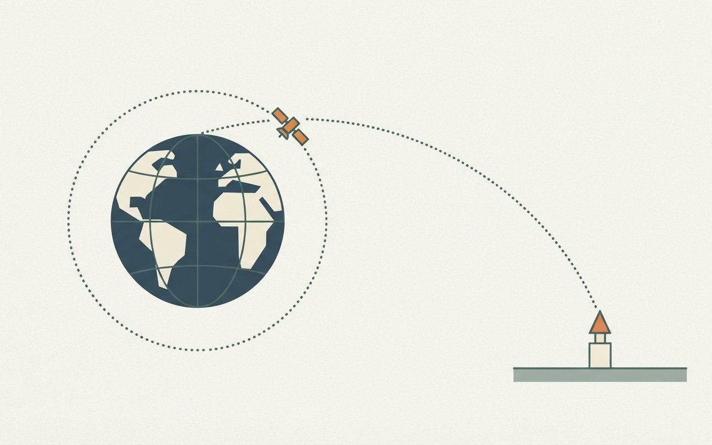

🎧 낭독 원고 보기
11월 16일 월요일, 데일리 브리프입니다. 주말 사이 쌓인 여섯 가지 소식을 전해 드립니다.
세무사 시험 수석 합격자가 AI로 답을 받았다며 경찰에 자수했습니다. 1차 시험에서 160문항 가운데 하나만 틀려 400점 만점에 397.5점을 받은 사람입니다. 같은 시험의 세법학개론은 응시자 열 명 중 일곱 명 넘게 과락할 만큼 어려웠습니다. 고용노동부와 산업인력공단은 시험 무효와 5년 응시 제한을 추진하고, 올해 모든 국가자격시험을 조사합니다. 청와대는 긴급회의를 열어 19일 수능에서 AI 기기 점검을 강화하기로 했습니다.
미국 하늘길이 4시간 넘게 멈췄습니다. 미 연방항공청이 13일 전국 이륙 중단을 명령했고, 9·11 이후 가장 긴 전국 운항 중단이었습니다. 고고도 관제센터 22곳 가운데 17곳에 장애가 났습니다. 새로 설치한 라우터가 대량 데이터를 보내 관제망에 과부하가 걸린 것으로 알려졌고, 당국은 사이버 공격 징후는 없다고 밝혔습니다. 14일에는 6,600편 넘게, 15일에는 1,300편 넘게 결항해 주말 이틀 결항은 7,900편이 넘었고, 인천공항 미국 노선도 42편이 차질을 빚었습니다.
젠슨 황의 복귀를 요구하는 청원이 이어지고 있습니다. 14일 오후 서명자가 11만 5천 명을 넘었고, 그중 주주가 6만 3천여 명, 현직 직원이 6천 명 가까이였습니다. 16일 새벽에는 15만 명을 넘겼다는 보도가 나왔습니다. 엔비디아는 현지 시간 17일 3분기 실적을 발표합니다.
트럼프, 시진핑, 푸틴 세 정상이 19일 중국 선전에서 처음으로 3자 정상회담을 엽니다. 의제는 핵군축입니다. 미국과 러시아의 핵 군축 조약인 뉴스타트는 2월에 만료됐고, 트럼프 대통령은 중국이 참여하는 새 합의를 요구해 왔습니다. 미 당국자는 합의 발표는 기대하지 않는다고 했습니다.
스페이스X 스타십의 2단 로켓이 발사탑의 젓가락 팔에 잡혔습니다. 2단은 22시간 32분 동안 지구를 14바퀴 돌며 스타링크 위성 26기를 배치한 뒤 돌아왔습니다. 상단 로켓 회수는 처음입니다. 다만 1단은 회수에 실패했습니다.
울릉도 오징어가 사라지고 있습니다. 2000년 1만 1천 톤이 넘던 어획량이 지난해 142톤으로, 2000년의 1.2퍼센트가 됐습니다. 올해 1월부터 9월까지는 54톤에 그쳤습니다. 저동항 오징어 채낚기 어선 23척의 선주가 모두 감척을 신청했고, 모두 감척되면 2027년 저동항 오징어잡이 배는 한 척도 남지 않습니다. 경향신문에 따르면 원인은 수온 상승과 중국 어선의 남획입니다.
끝으로 오늘 서울 날씨입니다. 아침 최저 8도, 낮 최고 17도이고 구름이 많겠습니다. 서울에는 비 소식이 없습니다.
이상으로 오늘의 데일리 브리프를 마칩니다. 자세한 내용과 출처는 카드에서 확인하세요.
試
시험 · AI 부정행위
세무사 시험 수석 합격자 'AI 커닝' 자수 — 1차 397.5점, 정부는 국가자격시험 전수조사·수능 AI 기기 점검 강화
제63회 세무사 시험 수석 합격자 A씨가 15일 경찰에 자수했다. 시험 중 문제를 촬영해 생성형 AI에 보내고 답을 확인했다고 밝혔다(경향신문). A씨는 4월 1차 시험에서 160문항 중 1개만 틀려 400점 만점에 397.5점을 받았다. 같은 1차 과목 세법학개론은 응시자 16,856명 중 74.21%가 과락했고 평균은 30.18점이었다. 7월 2차는 800점 만점에 663점으로 최종 합격했다. 사건은 서울경찰청 광역수사단 공공범죄수사대가 맡았다.
고용노동부와 한국산업인력공단은 시험 무효·5년 응시 제한·고발을 추진하고, 올해 모든 국가자격시험을 조사하며 부정행위 방지대책을 연내 마련한다(뉴스1). 청와대는 하준경 정책실장 주재 긴급회의에서 국가자격시험의 AI 부정행위 의심 사례를 전수조사하고, 수능 AI 기기 점검을 강화하기로 했다(뉴스1). 수능은 19일이다(경향신문). 합격 취소·제재는 아직 '추진·검토' 단계다.
- 1차(4월)397.5점/400점 · 160문항 중 1개 오답
- 세법학개론응시 16,856명 · 과락 74.21% · 평균 30.18점
- 2차(7월)663점/800점 · 최종 합격
- 진행15일 자수 · 서울청 광역수사단 수사 · 시험 무효·5년 응시 제한 추진(확정 아님)
- 정부 대응국가자격시험 전수조사 · 19일 수능 AI 기기 점검 강화 · 방지대책 연내
- 확인 한계점수·과락률은 경향신문 단독 확인 · 자수·수사 배당은 여러 매체 일치
Context · 맥락 읽기
시험장이 막아 온 것은 휴대전화였지만, 이번 사건은 작은 카메라와 생성형 AI가 결합한 방식이었다. 대책의 초점이 '기기 반입 금지'에서 '전파·기기 탐지'로 옮겨 갈 수 있다. 수능 당일 점검 방식이 어떻게 바뀌는지가 이번 주 관심사다.
경향신문 — 세무사 수석 자수 뉴스1 — 시험 무효·전수조사 뉴스1 — 청와대 긴급회의
경향신문(11/15 15:56)·뉴스1(11/15 19:47·11/15 16:59) · 점수·과락률은 경향신문, 제재·전수조사는 뉴스1 기준 · 부정행위 방법은 경향신문이 전한 자수 진술 수준까지만 (확인 2026-11-16)
세무사 수석 합격자,
'AI로 답 받았다' 자수
1차 시험 160문항 중 1개만 틀린 수석 합격자가 경찰에 자수했어요. 정부는 국가자격시험을 전수조사하고 수능 AI 기기 점검을 강화해요.
4월 1차|7월 2차|15일 자수|19일 수능
74.21%|1차 세법학개론 과락률 · 응시 16,856명
航
항공 · 미국 관제망
미국 전역 이륙 4시간 넘게 중단, 9·11 뒤 최장 — 주말 결항 7,900편 넘어, 인천공항 미국 노선 42편 차질
미 연방항공청(FAA)이 13일(현지시간) 전국 이륙 중단을 명령해 4시간 넘게 이어졌다. 2001년 9·11 테러 이후 가장 긴 전국 운항 중단이다(뉴시스). 14일에는 예정 41,000편 중 6,600편 이상, 15일에는 26,000여 편 중 1,300편 이상이 결항해 주말 결항은 7,900편 이상이다.
원인은 FAA 계약업체 L3해리스가 기존 구리선을 광케이블로 바꾸며 설치한 새 라우터가 대량 데이터를 보내 관제망에 과부하를 일으킨 것으로 알려졌다. 고고도 관제센터 22곳 중 17곳에 장애가 났고, 비행 중이던 3,500여 대는 안전하게 착륙했다. 당국은 사이버 공격 징후는 없다고 밝혔다(뉴시스). 인천공항에서는 미국 노선 111편 중 42편(여객기 16편)이 결항·지연됐다(YTN).
- 중단13일(현지) 전국 이륙 중단 4시간 넘게 · 9·11 이후 최장
- 결항14일 6,600편 이상(예정 41,000편) · 15일 1,300편 이상(26,000여 편) · 주말 7,900편 이상
- 장애고고도 관제센터 22곳 중 17곳 · 비행 중 3,500여 대 안전 착륙
- 원인새 라우터의 대량 데이터 → 관제망 과부하(조사 중) · 사이버 공격 징후 없음
- 한국 영향인천공항 미국 노선 111편 중 42편 차질(여객기 16편) · 결항·지연 구분 없음
- 확인 한계중단 시간은 YTN 약 4시간 20분 · 다른 매체 집계와 결항 수치 차이 있음 ⚠ 변동 가능
Marketing View · 마케터의 시선
사이버 공격이 아니라 장비 교체 한 건이 22곳 중 17곳을 멈췄다. 미국행 예약자에게는 이번 주 항공사 공지 확인이 먼저다. 인프라를 바꾸는 순간이 가장 위험하다는 점은 모든 서비스 운영자에게 같은 교훈이다.
뉴시스 — 주말 결항 집계 뉴시스 — 원인 라우터 YTN — 인천공항 영향
뉴시스(11/16 05:12·11/15 17:35)·YTN(11/14 22:29) · 결항·원인은 뉴시스, 인천공항은 YTN 기준 · 원인은 조사 중 (확인 2026-11-16)
미국 하늘길 4시간 멈춤,
9·11 뒤 가장 길었다
관제망 과부하로 미국 전역 이륙이 4시간 넘게 멈췄어요. 주말 결항이 7,900편을 넘었고 인천공항 미국 노선도 42편이 차질을 빚었어요.
17곳|장애가 난 고고도 관제센터 · 22곳 중
14일 6,600편+ · 15일 1,300편+ 결항 / 사이버 공격 징후 없음
願
엔비디아 · 복귀 청원
'젠슨 황 돌아오라' 청원 15만 명 넘어 — 주주 6만 3천여 명 서명, 엔비디아 17일(현지) 3분기 실적 발표
사임한 젠슨 황 엔비디아 창업자의 복귀를 요구하는 온라인 청원 'Stand with Jensen'에 14일 오후 기준 11만 5,000명 이상이 서명했다. 현직 직원 5,965명, 전직 직원 1,108명, 주주 63,063명이다(경향신문). 청원은 독립 조사로 사실이 밝혀질 때까지 복귀시키라고 요구한다. YTN은 16일 서명이 15만 명을 훌쩍 넘겼다고 전했다. 회사는 콜레트 크레스 CFO가 임시 CEO를 맡고 있다.
엔비디아는 현지시간 17일 3분기 실적을 발표한다. 경향신문은 월가 전망 매출을 1,092억 달러(1년 전보다 91% 증가)로 전했다. 사임 배경과 관련한 여러 의혹은 확인되지 않았다.
- 청원 서명11만 5,000명 이상(14일 오후, 경향신문) · 15만 명 이상(16일, YTN)
- 서명자 구성현직 직원 5,965명 · 전직 1,108명 · 주주 63,063명(14일 오후)
- 경영콜레트 크레스 CFO 임시 CEO
- 이번 주17일(현지) 3분기 실적 · 월가 전망 매출 1,092억 달러(+91%)
- 확인 한계서명 수는 시점이 달라 매체별 차이 · 사임 관련 의혹은 미확인 ⚠ 변동 가능
Marketing View · 마케터의 시선
서명자 중 주주가 현직 직원보다 열 배 넘게 많다. 창업자 한 사람이 곧 회사 가치로 읽혀 온 기업에서 경영 공백은 주가 문제로 바로 이어진다. 17일 실적 발표가 시장이 '젠슨 황 없는 엔비디아'를 처음 평가하는 자리다.
경향신문 — 복귀 청원 YTN — 서명 15만 명 경향신문 — 이번 주 일정
경향신문(11/15 10:49·11/15 15:27)·YTN(11/16 04:15) · 서명 구성은 경향신문(14일 오후 기준), 15만 명은 YTN, 실적 전망은 경향신문 기준 (확인 2026-11-16)
"젠슨 황 돌아오라"
청원 15만 명 넘어
사임한 젠슨 황의 복귀를 요구하는 청원에 주주 6만 3천여 명과 직원이 몰렸어요. 엔비디아는 현지시간 17일 3분기 실적을 발표해요.
현직 직원:5,965|전직 직원:1,108|주주:63,063
14일 오후 기준 구성 · 16일엔 15만 명 넘어
核
외교 · 핵군축
트럼프·시진핑·푸틴, 19일 첫 3자 정상회담 — 중국 선전 APEC 계기, 뉴스타트 만료 뒤 핵군축이 의제
미·중·러 정상이 19일(현지시간) 중국 선전 APEC 정상회의를 계기로 처음 3자 정상회담을 연다. 백악관이 13일, 크렘린이 14일 일정을 확인했다(뉴시스). 의제는 핵군축이다. 미·러 핵군축 조약 뉴스타트는 2월에 만료됐고, 트럼프 대통령은 러시아의 1년 연장 제안을 거부하고 중국이 참여하는 새 합의를 요구해 왔다.
미 당국자는 이번 회담을 "핵군축 대화의 출발점"이라고 하면서도 합의 발표는 기대하지 않는다고 했다(뉴시스). 스톡홀름국제평화연구소(SIPRI)의 2026년 1월 추정 핵탄두는 러시아 5,420기, 미국 5,042기, 중국 620기다(경향신문). 미 당국자는 우크라이나 전쟁은 다루지 않을 것이라고 했다(뉴시스). 푸틴 대통령이 종전 협상을 원한다는 보도도 있다(경향신문, WSJ 인용).
- 일정19일(현지) 중국 선전 · APEC 계기 · 첫 미·중·러 3자 정상회담
- 확인백악관 13일 · 크렘린 14일
- 의제핵군축 · 뉴스타트 2월 만료 · 미국은 중국 참여 새 합의 요구
- 핵탄두(SIPRI)러시아 5,420기 · 미국 5,042기 · 중국 620기(2026년 1월 추정)
- 확인 한계우크라이나 전쟁은 다루지 않는다는 게 미 당국자 설명(뉴시스) · 회담 전 보도 ⚠ 일정 변동 가능
Context · 맥락 읽기
핵탄두 수는 중국이 미·러의 8분의 1 수준이라 중국은 같은 틀의 감축에 응할 이유가 적다. 그래서 첫 만남의 성과는 숫자보다 '대화 틀을 만들었는가'로 읽어야 한다. 미 당국자도 합의 발표는 기대하지 않는다고 했다.
뉴시스 — 3자 회담 일정·의제 경향신문 — 핵탄두 현황
뉴시스(11/15)·경향신문(11/15 16:09) · 일정·의제는 뉴시스, 핵탄두 수치는 경향신문(SIPRI 인용) 기준 · 회담 전 보도 (확인 2026-11-16)
미·중·러 정상,
19일 처음 한자리에
트럼프·시진핑·푸틴이 19일 중국 선전에서 첫 3자 정상회담을 열어요. 핵군축이 의제지만 합의 발표는 기대하지 않는다고 해요.
2월 조약 만료|13일 백악관 확인|14일 크렘린 확인|19일 3자 회담
핵탄두(SIPRI 1월) 러 5,420 · 미 5,042 · 중 620기
捕
우주 · 스타십 15차
스타십 2단 로켓, 발사탑 '젓가락 팔'에 잡혔다 — 22시간 32분 비행 뒤 사상 첫 상단 회수, 1단은 실패
스페이스X 스타십 15차 시험비행에서 2단(상단) 로켓이 텍사스 스타베이스 발사탑의 '젓가락 팔'에 붙잡혔다. 상단 로켓 회수는 처음이다. 회수 시각은 14일 오후 3시 19분(현지), 한국시간 15일 오전 6시 19분이다(경향신문).
2단은 22시간 32분 동안 지구를 14바퀴 돌며 스타링크 위성 26기를 배치했다. 기체 전체 길이는 124m(1단 72m, 2단 52m)다. 1단은 회수에 실패해 두 단을 모두 잡는 '더블 캐치'는 다음으로 미뤄졌다(경향신문·YTN).
- 회수2단 · 14일 오후 3시 19분(현지) = 한국시간 15일 오전 6시 19분 · 첫 상단 회수
- 비행22시간 32분 · 지구 14바퀴 · 스타링크 26기 배치
- 기체전체 124m · 1단 72m · 2단 52m
- 1단회수 실패 · 더블 캐치 다음으로
- 확인 한계2단 고도·1단 낙하 경위는 매체별로 달라 싣지 않음
Marketing View · 마케터의 시선
지금까지 회수한 것은 1단뿐이었다. 위성을 싣고 궤도를 돈 상단까지 되찾으면 발사체 전체를 다시 쓰는 길이 열린다. 발사 단가가 내려가면 위성 인터넷 같은 서비스 가격에도 차례로 영향을 준다.
경향신문 — 2단 첫 회수 YTN — 1단 회수 실패
경향신문(11/15 09:48)·YTN(11/15 23:26) · 비행 시간·바퀴 수·1단 실패는 두 매체 일치, 기체 길이·회수 시각은 경향신문 기준 (확인 2026-11-16)
스타십 2단 로켓,
처음으로 붙잡았다
스타십 2단 로켓이 22시간 넘게 궤도를 돌며 위성을 배치한 뒤 발사탑 팔에 잡혔어요. 상단 회수는 처음이지만 1단은 회수에 실패했어요.
14바퀴|지구를 돈 횟수
26기|배치한 스타링크 위성
Flat conceptual schematic: a dotted orbital path looping around a simplified Earth and curving back down to a small abstract tower icon, minimal vector diagram, conceptual schematic, not a real photograph, no text, no logos, no people

烏
어업 · 울릉 오징어
울릉 오징어 어획량, 25년 새 2000년의 1.2%로 — 11,402t에서 142t, 2027년 저동항 오징어배 '0척'
경향신문에 따르면 울릉군 오징어 어획량은 2000년 11,402t에서 2015년 1,852t, 2020년 1,172t, 2025년 142t으로 줄었다. 2000년의 1.2% 수준이다. 올해 1~9월은 54t이다.
저동항 채낚기 어선 23척의 선주가 모두 감척을 신청했다. 울릉 지역에서는 2020~2025년 연안어선 48척이 이미 감척됐고, 올해 38억 원으로 19척을 더 감척할 예정이다. 모두 감척되면 2027년 저동항 오징어잡이배는 0척이 된다. 원인으로는 수온 상승과 중국 쌍끌이 어선의 남획이 꼽힌다. 표층 수온 20도 이상인 날은 1970년대 연 70~80일에서 2020년대 160일로 늘었고, 오징어 적정 수온은 12~18도다.
- 어획량2000년 11,402t · 2015년 1,852t · 2020년 1,172t · 2025년 142t(2000년의 1.2%) · 2026년 1~9월 54t
- 감척저동항 23척 전원 신청 · 울릉 연안어선 2020~2025년 48척 · 올해 38억 원으로 19척 예정
- 수온표층 20도 이상 날 1970년대 연 70~80일 → 2020년대 160일 · 적정 12~18도
- 확인 한계경향신문 단일 출처
Marketing View · 마케터의 시선
'울릉도 오징어'는 지역 이름이 곧 상품인 대표 브랜드였다. 배가 사라지면 축제·관광 상품의 이야기부터 다시 써야 한다. 식탁의 오징어 가격과 원산지 표기도 함께 지켜볼 대목이다.
경향신문 — 울릉 오징어 감척
경향신문(11/15 16:18) 단일 매체 · 어획량·감척·수온 모두 경향신문 기준 (확인 2026-11-16)
울릉 오징어 25년 새
2000년의 1.2%로
울릉군 오징어 어획량이 2000년 11,402t에서 지난해 142t으로 줄었어요. 저동항 어선 23척이 모두 감척을 신청해 2027년엔 0척이 돼요.
2000년:11,402|2015년:1,852|2020년:1,172|2025년:142
A quiet Korean island harbor at dawn with small squid fishing boats strung with rows of unlit light bulbs, tied up at the pier, steep volcanic cliffs behind, Korean coastal village, not Japanese, no people, no text